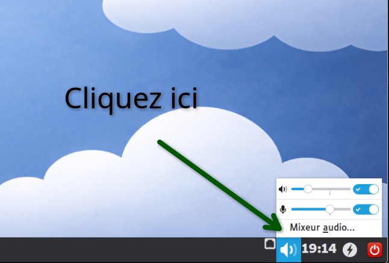
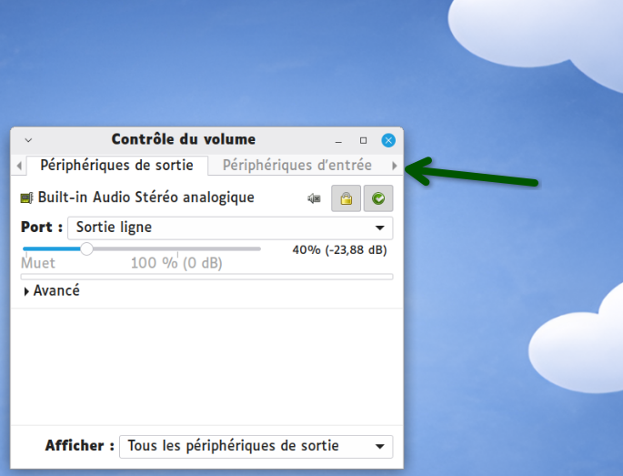
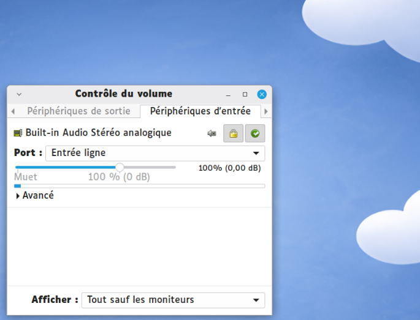
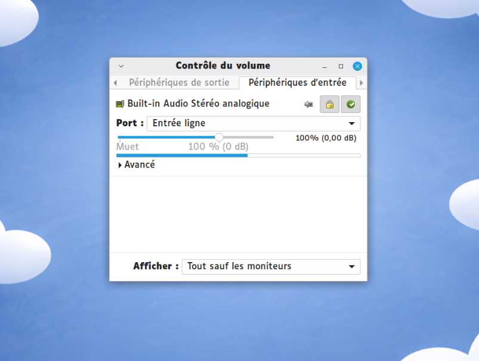

Ouvrir les paramètres audio
En bas à droite de l'écran, cliquez sur l'icône bleue du haut-parleur pour ouvrir le menu du son, puis sélectionnez « Mixeur audio… ».

Accéder aux réglages du microphone
Dans la fenêtre qui s'ouvre, regardez les onglets tout en haut. Cliquez sur la petite flèche noire à droite pour faire défiler les menus, et cliquez sur l'onglet « Périphériques d'entrée ».

Faire le test de la barre bleue
Observez la barre de niveau bleue : elle indique en temps réel ce que capte le microphone. Voici ce que vous devez obtenir :
🤫 Dans le silence
La barre doit être presque vide — seul un tout petit frémissement est normal. Si elle monte beaucoup sans que personne ne parle, le microphone capte trop de bruit ambiant.

🗣️ En parlant
Dès que l'enfant parle à voix normale, la barre doit monter clairement — jusqu'à la moitié ou aux deux tiers. Si elle n'atteint pas le milieu, le volume est trop faible.

Ajuster le volume
Utilisez le curseur (le petit rond gris au-dessus de la barre bleue) pour glisser le volume vers la gauche (diminuer) ou vers la droite (augmenter) jusqu'à obtenir le comportement idéal décrit à l'étape 3.